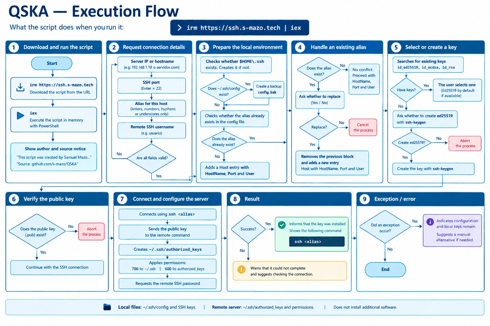

QSKA
Quick SSH Key Assistant: a PowerShell script that gets your SSH access ready in under a minute, run with a single command straight from the internet.
Use it like this:
irm https://ssh.s-mazo.tech/ | iex

Real capture of a script run (demo data). No mockups: this is exactly what you'd see running it on your machine.
QSKA in figures
What it does for you
Alias configuration
Adds the host to your ~/.ssh/config with HostName, Port and User. If a config already exists, it makes an automatic backup to config.bak before touching anything; if the alias already exists, it asks whether you want to replace it.
SSH key management
Detects your existing keys (id_ed25519, id_ecdsa, id_rsa) and lets you pick one — ed25519 by default — or creates a new ed25519 key with ssh-keygen if you have none.
Server installation
The equivalent of ssh-copy-id (which doesn't exist on Windows): connects over SSH, appends your public key to ~/.ssh/authorized_keys on the remote server and applies the right permissions (700 on ~/.ssh, 600 on authorized_keys).
Transparency and security
It only touches your ~/.ssh folder. It doesn't change system policies, doesn't send data anywhere and doesn't install anything beyond the OpenSSH that already ships with Windows. Open source, so you can review it line by line before running it.
Input validation
Validates every piece of data before writing: IP or hostname required, port between 1 and 65535 (Enter = 22), alias limited to letters, numbers, hyphens and underscores. No broken configs from a typo.
Run from the internet
Designed to run with irm | iex: the script downloads, runs in memory and that's it. You can also clone the repository and run it locally if you'd rather review it first.
Execution flow

The script's 9 complete steps: download and execution, data collection, local environment preparation, handling of existing aliases, key selection or creation, public key verification, server connection and configuration, result, and exception handling.
Requirements
| Requirement | Detail |
|---|---|
| Operating system | Windows 10/11 (or Windows Server with PowerShell) |
| PowerShell | 5.1 or higher |
| OpenSSH Client | Enabled on Windows (ships by default since Windows 10 1809) |
On Linux/Mac it's not needed: ssh-copy-id already exists and editing ~/.ssh/config is trivial. QSKA exists because on Windows that process is tedious.
How to use it
Option 1 — from the internet (recommended): open PowerShell and paste irm https://ssh.s-mazo.tech/ | iex. The script downloads and runs in memory; in under a minute your alias is ready and the key is installed on the server.
Option 2 — local download: clone github.com/S-mazo/QSKA and run .\quickconnect.ps1. Ideal if you prefer reading the code before executing it (and you should, always).
When it's done, you just type ssh your-alias and you're in: no passwords, no long IPs, no weird ports.
My role
Complete project design, development, documentation and publishing: PowerShell script with validations, error handling and decision flow, dedicated domain (ssh.s-mazo.tech), bilingual README with FAQ, and an execution flow diagram. MIT license.